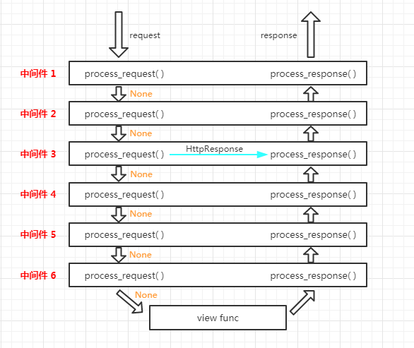
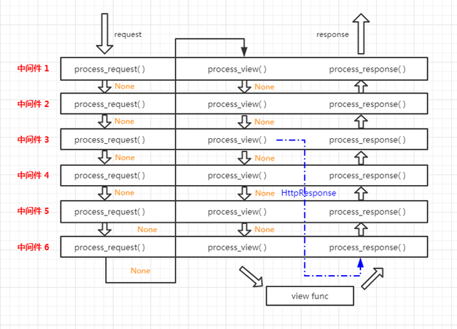

datetime:2019/6/28 14:13
author:nzb
Django中间件
前戏
我们在前面的课程中已经学会了给视图函数加装饰器来判断是用户是否登录，把没有登录的用户请求跳转到登录页面。 我们通过给几个特定视图函数加装饰器实现了这个需求。但是以后添加的视图函数可能也需要加上装饰器，这样是不是稍微有点繁琐。
学完今天的内容之后呢，我们就可以用更适宜的方式来实现类似给所有请求都做相同操作的功能了
中间件
中间件介绍
什么是中间件?
官方的说法：中间件是一个用来处理Django的请求和响应的框架级别的钩子。它是一个轻量、低级别的插件系统，用于在全局范围内改变Django的输入和输出。 每个中间件组件都负责做一些特定的功能。
但是由于其影响的是全局，所以需要谨慎使用，使用不当会影响性能。
说的直白一点中间件是帮助我们在视图函数执行之前和执行之后都可以做一些额外的操作，它本质上就是一个自定义类，类中定义了几个方法， Django框架会在请求的特定的时间去执行这些方法。
我们一直都在使用中间件，只是没有注意到而已，打开Django项目的Settings.py文件，看到下图的MIDDLEWARE配置项。
MIDDLEWARE = [
'django.middleware.security.SecurityMiddleware',
'django.contrib.sessions.middleware.SessionMiddleware',
'django.middleware.common.CommonMiddleware',
'django.middleware.csrf.CsrfViewMiddleware',
'django.contrib.auth.middleware.AuthenticationMiddleware',
'django.contrib.messages.middleware.MessageMiddleware',
'django.middleware.clickjacking.XFrameOptionsMiddleware',
]
MIDDLEWARE配置项是一个列表，列表中是一个个字符串，这些字符串其实是一个个类，也就是一个个中间件。
我们之前已经接触过一个csrf相关的中间件了？我们一开始让大家把他注释掉，再提交post请求的时候，就不会被forbidden了， 后来学会使用csrf_token之后就不再注释这个中间件了。
那接下来就学习中间件中的方法以及这些方法什么时候被执行。
自定义中间件
中间件可以定义五个方法，分别是：（主要的是process_request和process_response）
- process_request(self,request)
- process_view(self, request, view_func, view_args, view_kwargs)
- process_template_response(self,request,response)
- process_exception(self, request, exception)
- process_response(self, request, response)
以上方法的返回值可以是None或一个HttpResponse对象，如果是None，则继续按照django定义的规则向后继续执行，如果是HttpResponse对象， 则直接将该对象返回给用户。
自定义一个中间件
from django.utils.deprecation import MiddlewareMixin
class MD1(MiddlewareMixin):
def process_request(self, request):
print("MD1里面的 process_request")
def process_response(self, request, response):
print("MD1里面的 process_response")
return response
process_request
process_request有一个参数，就是request，这个request和视图函数中的request是一样的。
它的返回值可以是None也可以是HttpResponse对象。返回值是None的话，按正常流程继续走，交给下一个中间件处理，如果是HttpResponse对象， Django将不执行视图函数，而将相应对象返回给浏览器。
我们来看看多个中间件时，Django是如何执行其中的process_request方法的。
from django.utils.deprecation import MiddlewareMixin
class MD1(MiddlewareMixin):
def process_request(self, request):
print("MD1里面的 process_request")
class MD2(MiddlewareMixin):
def process_request(self, request):
print("MD2里面的 process_request")
pass
在settings.py的MIDDLEWARE配置项中注册上述两个自定义中间件：
MIDDLEWARE = [
'django.middleware.security.SecurityMiddleware',
'django.contrib.sessions.middleware.SessionMiddleware',
'django.middleware.common.CommonMiddleware',
'django.middleware.csrf.CsrfViewMiddleware',
'django.contrib.auth.middleware.AuthenticationMiddleware',
'django.contrib.messages.middleware.MessageMiddleware',
'django.middleware.clickjacking.XFrameOptionsMiddleware',
'middlewares.MD1', # 自定义中间件MD1
'middlewares.MD2' # 自定义中间件MD2
]
此时，我们访问一个视图，会发现终端中打印如下内容：
MD1里面的 process_request
MD2里面的 process_request
app01 中的 index视图
把MD1和MD2的位置调换一下，再访问一个视图，会发现终端中打印的内容如下：
MD2里面的 process_request
MD1里面的 process_request
app01 中的 index视图
看结果我们知道：视图函数还是最后执行的，MD2比MD1先执行自己的process_request方法。
在打印一下两个自定义中间件中process_request方法中的request参数，会发现它们是同一个对象。
由此总结一下：
1、中间件的process_request方法是在执行视图函数之前执行的。
2、当配置多个中间件时，会按照MIDDLEWARE中的注册顺序，也就是列表的索引值，从前到后依次执行的。
3、不同中间件之间传递的request都是同一个对象
多个中间件中的process_response方法是按照MIDDLEWARE中的注册顺序倒序执行的，也就是说第一个中间件的process_request方法首先执行， 而它的process_response方法最后执行，最后一个中间件的process_request方法最后一个执行，它的process_response方法是最先执行。
process_response
它有两个参数，一个是request，一个是response，request就是上述例子中一样的对象，response是视图函数返回的HttpResponse对象。 该方法的返回值也必须是HttpResponse对象。
给上述的M1和M2加上process_response方法：
from django.utils.deprecation import MiddlewareMixin
class MD1(MiddlewareMixin):
def process_request(self, request):
print("MD1里面的 process_request")
def process_response(self, request, response):
print("MD1里面的 process_response")
return response
class MD2(MiddlewareMixin):
def process_request(self, request):
print("MD2里面的 process_request")
pass
def process_response(self, request, response):
print("MD2里面的 process_response")
return response
访问一个视图，看一下终端的输出：
MD2里面的 process_request
MD1里面的 process_request
app01 中的 index视图
MD1里面的 process_response
MD2里面的 process_response
看结果可知：
process_response方法是在视图函数之后执行的，并且顺序是MD1比MD2先执行。(此时settings.py中 MD2比MD1先注册)
多个中间件中的process_response方法是按照MIDDLEWARE中的注册顺序倒序执行的，也就是说第一个中间件的process_request方法首先执行， 而它的process_response方法最后执行，最后一个中间件的process_request方法最后一个执行，它的process_response方法是最先执行。
process_view
process_view(self, request, view_func, view_args, view_kwargs)
该方法有四个参数
request是HttpRequest对象。
view_func是Django即将使用的视图函数。 （它是实际的函数对象，而不是函数的名称作为字符串。）
view_args是将传递给视图的位置参数的列表.
view_kwargs是将传递给视图的关键字参数的字典。 view_args和view_kwargs都不包含第一个视图参数（request）。
Django会在调用视图函数之前调用process_view方法。
它应该返回None或一个HttpResponse对象。 如果返回None，Django将继续处理这个请求，执行任何其他中间件的process_view方法，然后在执行相应的视图。 如果它返回一个HttpResponse对象，Django不会调用适当的视图函数。 它将执行中间件的process_response方法并将应用到该HttpResponse并返回结果。
给MD1和MD2添加process_view方法:
from django.utils.deprecation import MiddlewareMixin
class MD1(MiddlewareMixin):
def process_request(self, request):
print("MD1里面的 process_request")
def process_response(self, request, response):
print("MD1里面的 process_response")
return response
def process_view(self, request, view_func, view_args, view_kwargs):
print("-" * 80)
print("MD1 中的process_view")
print(view_func, view_func.__name__)
class MD2(MiddlewareMixin):
def process_request(self, request):
print("MD2里面的 process_request")
pass
def process_response(self, request, response):
print("MD2里面的 process_response")
return response
def process_view(self, request, view_func, view_args, view_kwargs):
print("-" * 80)
print("MD2 中的process_view")
print(view_func, view_func.__name__)
访问index视图函数，看一下输出结果：
MD2里面的 process_request
MD1里面的 process_request
--------------------------------------------------------------------------------
MD2 中的process_view
<function index at 0x000001DE68317488> index
--------------------------------------------------------------------------------
MD1 中的process_view
<function index at 0x000001DE68317488> index
app01 中的 index视图
MD1里面的 process_response
MD2里面的 process_response
process_view方法是在process_request之后，视图函数之前执行的，执行顺序按照MIDDLEWARE中的注册顺序从前到后顺序执行的
process_exception
process_exception(self, request, exception)
该方法两个参数:
一个HttpRequest对象
一个exception是视图函数异常产生的Exception对象。
这个方法只有在视图函数中出现异常了才执行，它返回的值可以是一个None也可以是一个HttpResponse对象。如果是HttpResponse对象，Django将调用模板和中间件中的process_response方法，并返回给浏览器，否则将默认处理异常。如果返回一个None，则交给下一个中间件的process_exception方法来处理异常。它的执行顺序也是按照中间件注册顺序的倒序执行。
给MD1和MD2添加上这个方法：
from django.utils.deprecation import MiddlewareMixin
class MD1(MiddlewareMixin):
def process_request(self, request):
print("MD1里面的 process_request")
def process_response(self, request, response):
print("MD1里面的 process_response")
return response
def process_view(self, request, view_func, view_args, view_kwargs):
print("-" * 80)
print("MD1 中的process_view")
print(view_func, view_func.__name__)
def process_exception(self, request, exception):
print(exception)
print("MD1 中的process_exception")
class MD2(MiddlewareMixin):
def process_request(self, request):
print("MD2里面的 process_request")
pass
def process_response(self, request, response):
print("MD2里面的 process_response")
return response
def process_view(self, request, view_func, view_args, view_kwargs):
print("-" * 80)
print("MD2 中的process_view")
print(view_func, view_func.__name__)
def process_exception(self, request, exception):
print(exception)
print("MD2 中的process_exception")
如果视图函数中无异常，process_exception方法不执行。
想办法，在视图函数中抛出一个异常：
def index(request):
print("app01 中的 index视图")
raise ValueError("呵呵")
return HttpResponse("O98K")
在MD1的process_exception中返回一个响应对象：
class MD1(MiddlewareMixin):
def process_request(self, request):
print("MD1里面的 process_request")
def process_response(self, request, response):
print("MD1里面的 process_response")
return response
def process_view(self, request, view_func, view_args, view_kwargs):
print("-" * 80)
print("MD1 中的process_view")
print(view_func, view_func.__name__)
def process_exception(self, request, exception):
print(exception)
print("MD1 中的process_exception")
return HttpResponse(str(exception)) # 返回一个响应对象
看输出结果：
MD2里面的 process_request
MD1里面的 process_request
--------------------------------------------------------------------------------
MD2 中的process_view
<function index at 0x0000022C09727488> index
--------------------------------------------------------------------------------
MD1 中的process_view
<function index at 0x0000022C09727488> index
app01 中的 index视图
呵呵
MD1 中的process_exception
MD1里面的 process_response
MD2里面的 process_response
注意，这里并没有执行MD2的process_exception方法，因为MD1中的process_exception方法直接返回了一个响应对象。
proc
process_template_response(用的比较少)
process_template_response(self, request, response)
它的参数，一个HttpRequest对象，response是TemplateResponse对象（由视图函数或者中间件产生）。
process_template_response是在视图函数执行完成后立即执行，但是它有一个前提条件，那就是视图函数返回的对象有一个render()方法 （或者表明该对象是一个TemplateResponse对象或等价方法）。
class MD1(MiddlewareMixin):
def process_request(self, request):
print("MD1里面的 process_request")
def process_response(self, request, response):
print("MD1里面的 process_response")
return response
def process_view(self, request, view_func, view_args, view_kwargs):
print("-" * 80)
print("MD1 中的process_view")
print(view_func, view_func.__name__)
def process_exception(self, request, exception):
print(exception)
print("MD1 中的process_exception")
return HttpResponse(str(exception))
def process_template_response(self, request, response):
print("MD1 中的process_template_response")
return response
class MD2(MiddlewareMixin):
def process_request(self, request):
print("MD2里面的 process_request")
pass
def process_response(self, request, response):
print("MD2里面的 process_response")
return response
def process_view(self, request, view_func, view_args, view_kwargs):
print("-" * 80)
print("MD2 中的process_view")
print(view_func, view_func.__name__)
def process_exception(self, request, exception):
print(exception)
print("MD2 中的process_exception")
def process_template_response(self, request, response):
print("MD2 中的process_template_response")
return response
views.py中：
def index(request):
print("app01 中的 index视图")
def render():
print("in index/render")
return HttpResponse("O98K")
rep = HttpResponse("OK")
rep.render = render
return rep
访问index视图，终端输出的结果：
MD2里面的 process_request
MD1里面的 process_request
--------------------------------------------------------------------------------
MD2 中的process_view
<function index at 0x000001C111B97488> index
--------------------------------------------------------------------------------
MD1 中的process_view
<function index at 0x000001C111B97488> index
app01 中的 index视图
MD1 中的process_template_response
MD2 中的process_template_response
in index/render
MD1里面的 process_response
MD2里面的 process_response
从结果看出：
视图函数执行完之后，立即执行了中间件的process_template_response方法，顺序是倒序，先执行MD1的，在执行MD2的， 接着执行了视图函数返回的HttpResponse对象的render方法，返回了一个新的HttpResponse对象，接着执行中间件的process_response方法。
中间件的执行流程
上一部分，我们了解了中间件中的5个方法，它们的参数、返回值以及什么时候执行，现在总结一下中间件的执行流程。
请求到达中间件之后，先按照正序执行每个注册中间件的process_reques方法，process_request方法返回的值是None，就依次执行， 如果返回的值是HttpResponse对象，不再执行后面的process_request方法，而是执行当前对应中间件的process_response方法， 将HttpResponse对象返回给浏览器。也就是说：如果MIDDLEWARE中注册了6个中间件，执行过程中，第3个中间件返回了一个HttpResponse对象， 那么第4,5,6中间件的process_request和process_response方法都不执行，顺序执行3,2,1中间件的process_response方法。

process_request方法都执行完后，匹配路由，找到要执行的视图函数，先不执行视图函数，先执行中间件中的process_view方法， process_view方法返回None，继续按顺序执行，所有process_view方法执行完后执行视图函数。 加入中间件3 的process_view方法返回了HttpResponse对象，则4,5,6的process_view以及视图函数都不执行，直接从最后一个中间件， 也就是中间件6的process_response方法开始倒序执行。

process_template_response和process_exception两个方法的触发是有条件的，执行顺序也是倒序。总结所有的执行流程如下：


中间件版登陆验证
中间件版的登录验证需要依靠session，所以数据库中要有django_session表。
urls.py
from django.conf.urls import url
from app01 import views
urlpatterns = [
url(r'^index/$', views.index),
url(r'^login/$', views.login, name='login'),
]
views.py
from django.shortcuts import render, HttpResponse, redirect
def index(request):
return HttpResponse('this is index')
def home(request):
return HttpResponse('this is home')
def login(request):
if request.method == "POST":
user = request.POST.get("user")
pwd = request.POST.get("pwd")
if user == "Q1mi" and pwd == "123456":
# 设置session
request.session["user"] = user
# 获取跳到登陆页面之前的URL
next_url = request.GET.get("next")
# 如果有，就跳转回登陆之前的URL
if next_url:
return redirect(next_url)
# 否则默认跳转到index页面
else:
return redirect("/index/")
return render(request, "login.html")
login.html
<!DOCTYPE html>
<html lang="en">
<head>
<meta charset="UTF-8">
<meta http-equiv="x-ua-compatible" content="IE=edge">
<meta name="viewport" content="width=device-width, initial-scale=1">
<title>登录页面</title>
</head>
<body>
<form action="{ % url 'login' % }">
<p>
<label for="user">用户名：</label>
<input type="text" name="user" id="user">
</p>
<p>
<label for="pwd">密 码：</label>
<input type="text" name="pwd" id="pwd">
</p>
<input type="submit" value="登录">
</form>
</body>
</html>
middlewares.py
class AuthMD(MiddlewareMixin):
white_list = ['/login/', ] # 白名单
balck_list = ['/black/', ] # 黑名单
def process_request(self, request):
from django.shortcuts import redirect, HttpResponse
next_url = request.path_info
print(request.path_info, request.get_full_path())
if next_url in self.white_list or request.session.get("user"):
return
elif next_url in self.balck_list:
return HttpResponse('This is an illegal URL')
else:
return redirect("/login/?next={}".format(next_url))
在settings.py中注册
MIDDLEWARE = [
'django.middleware.security.SecurityMiddleware',
'django.contrib.sessions.middleware.SessionMiddleware',
'django.middleware.common.CommonMiddleware',
'django.middleware.csrf.CsrfViewMiddleware',
'django.contrib.auth.middleware.AuthenticationMiddleware',
'django.contrib.messages.middleware.MessageMiddleware',
'middlewares.AuthMD',
]
AuthMD中间件注册后，所有的请求都要走AuthMD的process_request方法。
访问的URL在白名单内或者session中有user用户名，则不做阻拦走正常流程；
如果URL在黑名单中，则返回This is an illegal URL的字符串；
正常的URL但是需要登录后访问，让浏览器跳转到登录页面。
注：AuthMD中间件中需要session，所以AuthMD注册的位置要在session中间的下方。
附：Django请求流程图

中间件的应用(100天)
实现登录验证
我们继续来完善投票应用。在上一个章节中，我们在用户登录成功后通过session保留了用户信息，接下来我们可以应用做一些调整，要求在为老师投票时必须要先登录，登录过的用户可以投票，否则就将用户引导到登录页面，为此我们可以这样修改视图函数。
def praise_or_criticize(request: HttpRequest):
"""投票"""
if 'username' in request.session:
try:
tno = int(request.GET.get('tno', '0'))
teacher = Teacher.objects.get(no=tno)
if request.path.startswith('/praise'):
teacher.good_count += 1
else:
teacher.bad_count += 1
teacher.save()
data = {'code': 200, 'message': '操作成功'}
except (ValueError, Teacher.DoesNotExist):
data = {'code': 404, 'message': '操作失败'}
else:
data = {'code': 401, 'message': '请先登录'}
return JsonResponse(data)
前端页面在收到{'code': 401, 'message': '请先登录'}后，可以将用户引导到登录页面，修改后的teacher.html页面的JavaScript代码部门如下所示。
<script>
$(() => {
$('.comment > a').on('click', (evt) => {
evt.preventDefault()
let a = $(evt.target)
$.getJSON(a.attr('href'), (json) => {
if (json.code == 200) {
let span = a.next()
span.text(parseInt(span.text()) + 1)
} else if (json.code == 401) {
location.href = '/login/?backurl=' + location.href
} else {
alert(json.message)
}
})
})
})
</script>
注意：为了在登录成功之后能够回到刚才投票的页面，我们在跳转登录时设置了一个
backurl参数，把当前浏览器中的URL作为返回的页面地址。
这样我们已经实现了用户必须登录才能投票的限制，但是一个新的问题来了。如果我们的应用中有很多功能都需要用户先登录才能执行，例如将前面导出Excel报表和查看统计图表的功能都加以登录限制，那么我们是不是需要在每个视图函数中添加代码来检查session中是否包含了登录用户的信息呢？答案是否定的，如果这样做了，我们的视图函数中必然会充斥着大量的重复代码。编程大师Martin Fowler曾经说过：代码有很多种坏味道，重复是最坏的一种。在Django项目中，我们可以把验证用户是否登录这样的重复性代码放到中间件中。
Django中间件概述
中间件是安插在Web应用请求和响应过程之间的组件，它在整个Web应用中扮演了拦截过滤器的角色，通过中间件可以拦截请求和响应，并对请求和响应进行过滤（简单的说就是执行额外的处理）。通常，一个中间件组件只专注于完成一件特定的事，例如：Django框架通过SessionMiddleware中间件实现了对session的支持，又通过AuthenticationMiddleware中间件实现了基于session的请求认证。通过把多个中间件组合在一起，我们可以完成更为复杂的任务，Django框架就是这么做的。
Django项目的配置文件中就包含了对中间件的配置，代码如下所示。
MIDDLEWARE = [
'django.middleware.security.SecurityMiddleware',
'django.contrib.sessions.middleware.SessionMiddleware',
'django.middleware.common.CommonMiddleware',
'django.middleware.csrf.CsrfViewMiddleware',
'django.contrib.auth.middleware.AuthenticationMiddleware',
'django.contrib.messages.middleware.MessageMiddleware',
'django.middleware.clickjacking.XFrameOptionsMiddleware',
]
我们稍微为大家解释一下这些中间件的作用：
- CommonMiddleware - 基础设置中间件，可以处理以下一些配置参数。
- DISALLOWED_USER_AGENTS - 不被允许的用户代理（浏览器）
- APPEND_SLASH - 是否追加
/ - USE_ETAG - 浏览器缓存相关
- SecurityMiddleware - 安全相关中间件，可以处理和安全相关的配置项。
- SECURE_HSTS_SECONDS - 强制使用HTTPS的时间
- SECURE_HSTS_INCLUDE_SUBDOMAINS - HTTPS是否覆盖子域名
- SECURE_CONTENT_TYPE_NOSNIFF - 是否允许浏览器推断内容类型
- SECURE_BROWSER_XSS_FILTER - 是否启用跨站脚本攻击过滤器
- SECURE_SSL_REDIRECT - 是否重定向到HTTPS连接
- SECURE_REDIRECT_EXEMPT - 免除重定向到HTTPS
- SessionMiddleware - 会话中间件。
- CsrfViewMiddleware - 通过生成令牌，防范跨请求份伪的造中间件。
- XFrameOptionsMiddleware - 通过设置请求头参数，防范点击劫持攻击的中间件。
在请求的过程中，上面的中间件会按照书写的顺序从上到下执行，然后是URL解析，最后请求才会来到视图函数；在响应的过程中，上面的中间件会按照书写的顺序从下到上执行，与请求时中间件执行的顺序正好相反。
自定义中间件
Django中的中间件有两种实现方式：基于类的实现方式和基于函数的实现方式，后者更接近于装饰器的写法。装饰器实际上是代理模式的应用，将横切关注功能（与正常业务逻辑没有必然联系的功能，例如：身份认证、日志记录、编码转换之类的功能）置于代理中，由代理对象来完成被代理对象的行为并添加额外的功能。中间件对用户请求和响应进行拦截过滤并增加额外的处理，在这一点上它跟装饰器是完全一致的，所以基于函数的写法来实现中间件就跟装饰器的写法几乎一模一样。下面我们用自定义的中间件来实现用户登录验证的功能。
"""
middlewares.py
"""
from django.http import JsonResponse
from django.shortcuts import redirect
# 需要登录才能访问的资源路径
LOGIN_REQUIRED_URLS = {
'/praise/', '/criticize/', '/excel/', '/teachers_data/',
}
def check_login_middleware(get_resp):
def wrapper(request, *args, **kwargs):
# 请求的资源路径在上面的集合中
if request.path in LOGIN_REQUIRED_URLS:
# 会话中包含userid则视为已经登录
if 'userid' not in request.session:
# 判断是不是Ajax请求
if request.is_ajax():
# Ajax请求返回JSON数据提示用户登录
return JsonResponse({'code': 10003, 'hint': '请先登录'})
else:
backurl = request.get_full_path()
# 非Ajax请求直接重定向到登录页
return redirect(f'/login/?backurl={backurl}')
return get_resp(request, *args, **kwargs)
return wrapper
修改配置文件，激活中间件使其生效。
MIDDLEWARE = [
'django.middleware.security.SecurityMiddleware',
'django.contrib.sessions.middleware.SessionMiddleware',
'django.middleware.common.CommonMiddleware',
'django.middleware.csrf.CsrfViewMiddleware',
'django.contrib.auth.middleware.AuthenticationMiddleware',
'django.contrib.messages.middleware.MessageMiddleware',
'django.middleware.clickjacking.XFrameOptionsMiddleware',
'debug_toolbar.middleware.DebugToolbarMiddleware',
'vote.middlewares.check_login_middleware',
]
注意上面这个中间件列表中元素的顺序，当收到来自用户的请求时，中间件按照从上到下的顺序依次执行，这行完这些中间件以后，请求才会最终到达视图函数。当然，在这个过程中，用户的请求可以被拦截，就像上面我们自定义的中间件那样，如果用户在没有登录的情况下访问了受保护的资源，中间件会将请求直接重定向到登录页，后面的中间件和视图函数将不再执行。在响应用户请求的过程中，上面的中间件会按照从下到上的顺序依次执行，这样的话我们还可以对响应做进一步的处理。
中间件执行的顺序是非常重要的，对于有依赖关系的中间件必须保证被依赖的中间件要置于依赖它的中间件的前面，就好比我们刚才自定义的中间件要放到SessionMiddleware的后面，因为我们要依赖这个中间件为请求绑定的session对象才能判定用户是否登录。
小结
至此，除了对用户投票数量加以限制的功能外，这个投票应用就算基本完成了，整个项目的完整代码请参考https://github.com/jackfrued/django1902，其中用户注册时使用的手机验证码功能请大家使用自己注册的短信平台替代它。如果需要投票应用完整的视频讲解，可以在首页扫码打赏后留言联系作者获取视频下载地址，谢谢大家的理解和支持。